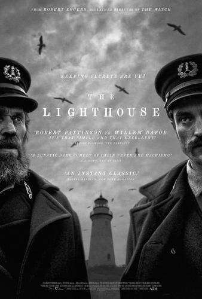
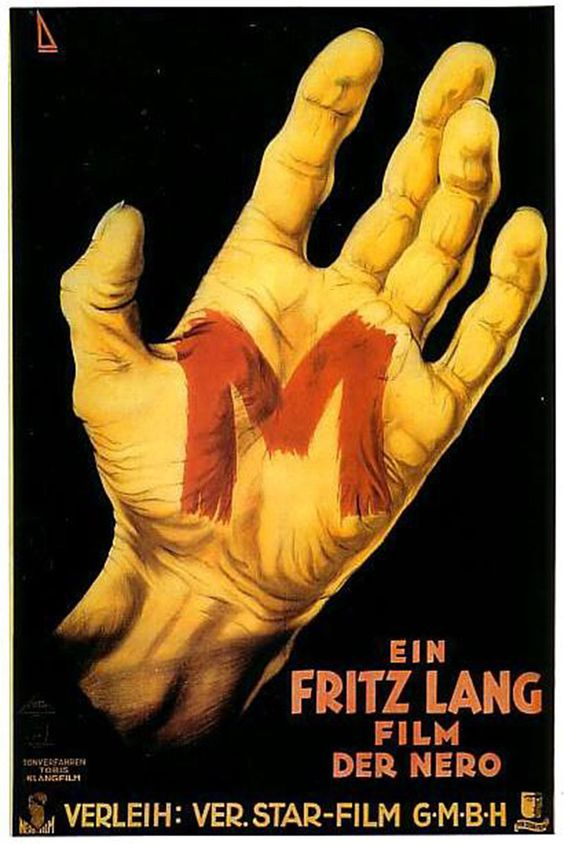
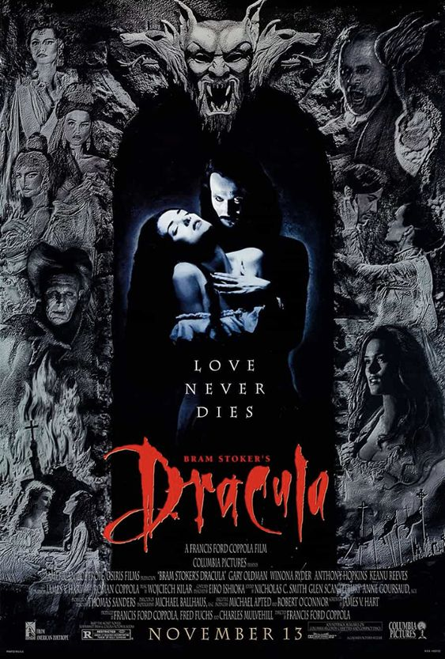

Cult
Assistir a um filme cult pode expandir os horizontes do espectador, estimular a criatividade, promover debates e proporcionar uma nova perspectiva sobre a arte cinematográfica.

O farol
A história de um antigo faroleiro chamado Old, que mora em a cidade de Maine do início do século XX.
1 h 49 min

M, O Vampiro de Dusseldorf
Quando a polícia de uma cidade alemã não consegue encontrar um assassino de crianças, outros criminosos decidem ajudar na caçada humana.
1 h 57 min

O ódio
24 horas na vida de três jovens nos subúrbios franceses no dia seguinte a uma rebelião violenta.
1 h 38 min

Drácula de Bram Stoker
O vampiro centenário Conde Drácula vai para a Inglaterra seduzir Mina Murray, a noiva do seu advogado Jonathan Harker, e causar estragos em terra estrangeira.
2 h 8 min